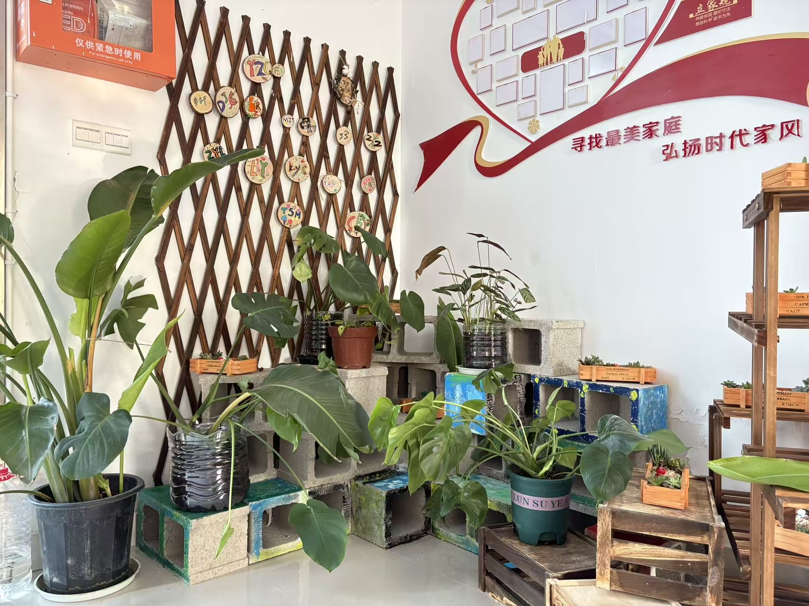
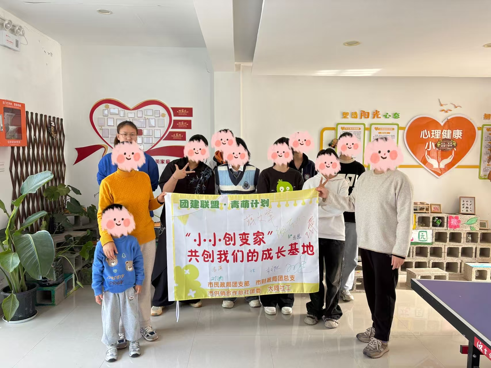
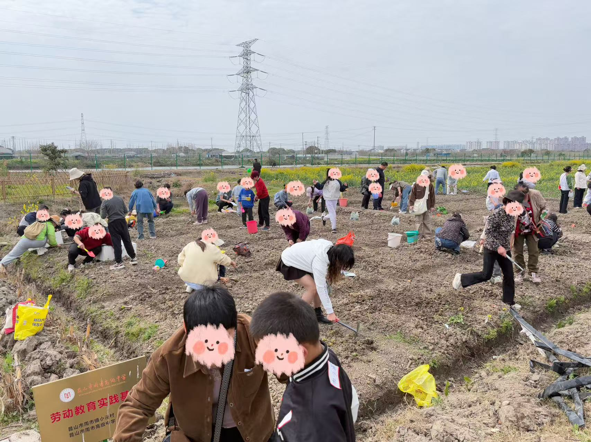
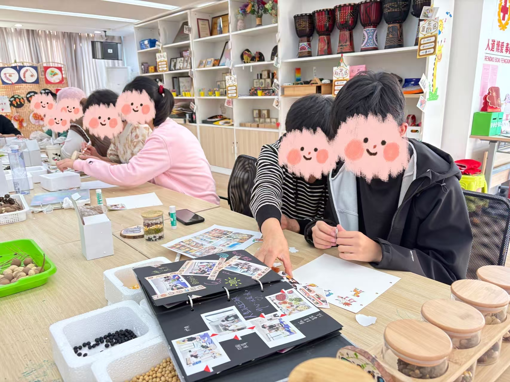
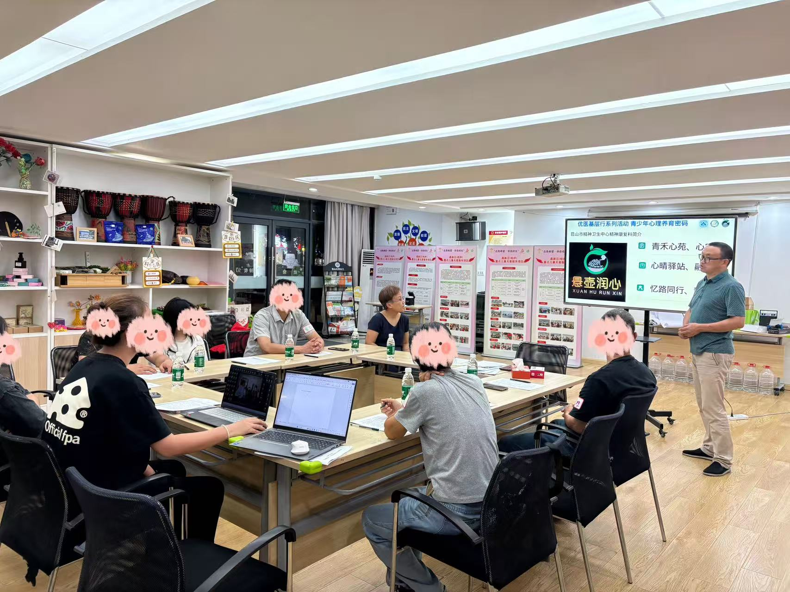
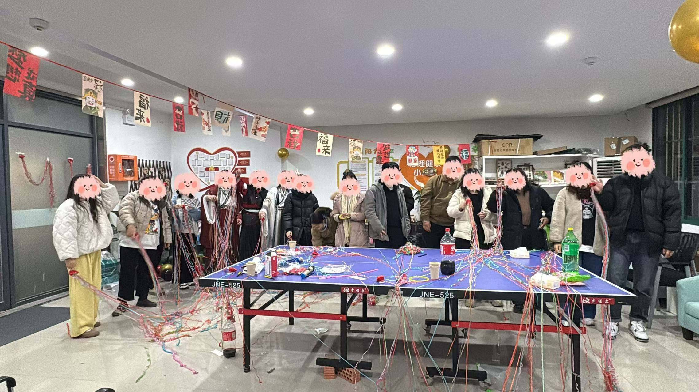
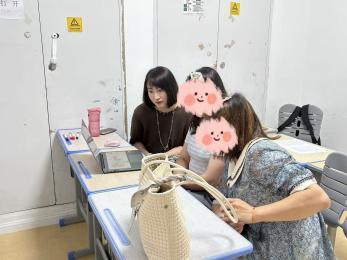
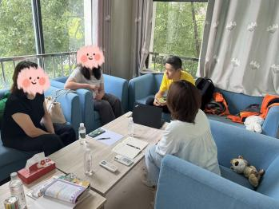
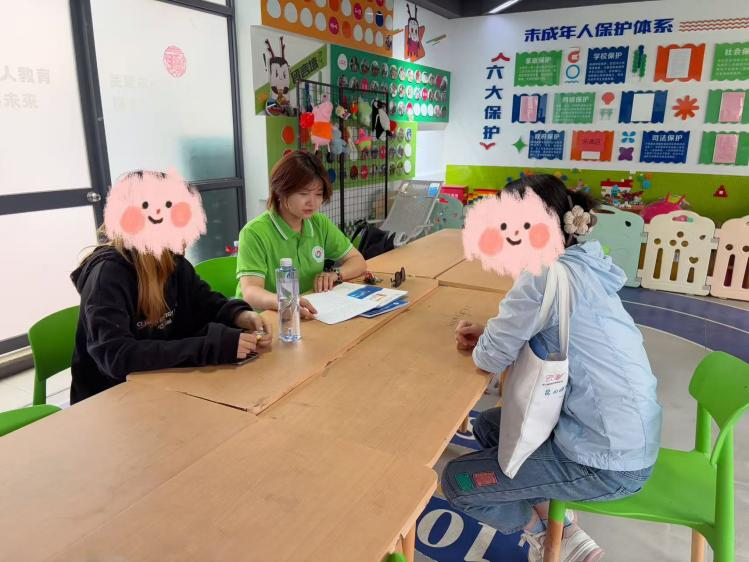

| 基地建设 | 园艺团辅&自我探索 |
|---|---|
|
参与共创一个除家庭、学校外安全的第三空间，营造接纳放松的氛围，以便自由地表达、倾诉，释放内心的压力与焦虑，供日常服务开展   |
结合“植物的生长周期”，聚焦情绪减压、社交赋能、动力激活三大目标，在园艺劳作和户外探索中习得疗愈技能，舒缓身心压力；在团队协作中促进朋辈交往，增强社会参与；从自然生命力中，汲取学习和生活的驱动力。   |
| 家庭服务 | 个别服务 |
|
通过舞动疗愈、家长工作坊等方式，结合亲子问题研讨，提升家长对抑郁症原理、病程等的认知，同时为照顾者们注入新的能量；创设亲子深度交往机会，促进亲子间良性互动、共同成长。   |
定期评估跟踪，判断服务对象的风险性；进行个别化服务，满足个体化需求    |